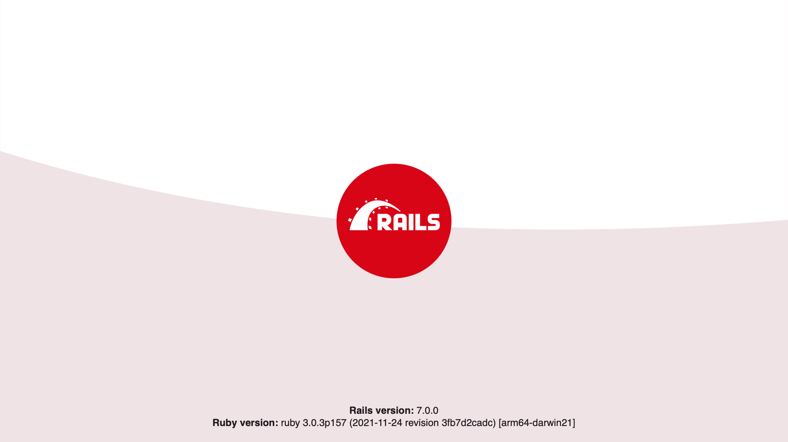

1 指南设定
本指南面向那些希望通过创建一个应用程序的过程就可以上手 Rails 的初学者——这也就是说不需要您有任何的 Rails 编程经验。
Rails 是一款基于 Ruby 编程语言的 Web 应用程序框架。如果您没有 Ruby 编程经验，想要深入学习 Rails 可能会有一定的困难。这有一个精选的在线 Ruby 学习资源清单：
有些资源虽然很优秀，但是可能是基于旧版的 Ruby，所以对您日常 Rails 开发可能会有些遗憾——因为有些学习资源还没有涵盖最新的语法知识。
2 Rails 是什么？
Rails 是基于 Ruby 编程语言的 Web 应用程序开发框架。其使 Web 编程更容易的设计得宜于 预设了每个开发者开始时的需要。同其他语言和框架相比，它可以做到写更少的代码完成更多的 功能。甚至有经验丰富的开发者称 Rails 开发更有趣。
Rails 是自以为是的软件——它坚信做任何事都有“最好”的方式，也鼓励您使用最好的方式——换句话说， 也就是不鼓励其他方式。如果您学会了 “Rails 之道”，您会发现您的研发能力会大幅提升。如果您 坚持将其他语言的开发习惯带入到 Rails 开发中，可能您的体验会很糟糕。
Rails 哲学包含两条主要的指导原则：
- DRY - Don't Repeat Yourself（不自我重复）: DRY 是软件开发的一条原则，它指出 “每一条知识在系统中有应该是单一的、明确的、权威的表述”。只有不重复编写相同的信息， 我们的代码才会更易于维护、更具有扩展性且错误更少。
- COC - Convention Over Configuration（约定优于配置）: Rails 认为在 Web 应用程 序开发中每件事都有最好的方式——这些最好的方式就是默认的约定设置，而不是去进行无休止的 配置文件设定。
3 构建一个新 Rails 项目
阅读本指南最好的方式就是跟着指南一步一步做。所有的步骤都是运行本示例程序必 须的，没有多余的代码和不必要的步骤。
按照指南的步骤，您会创建一个叫做 blog 的 Rails 项目，这是一个（非常）简单的博客程序。
在构建应用程序之前，您需要确认是否安装了 Rails。
下面的示例中使用 $ 代表类 UNIX 系统的终端提示符，当然该符号可以通过定制来改变，
我们这里只使用最原始的符号。如果您使用的是 Windows 系统，您的提示符应该像这样 C:\source_code>。
3.1 安装 Rails
安装 Rails 之前，您需要检查您的操作系统是否预装了：
- Ruby
- SQLite3
3.1.1 安装 Ruby
打开一个命令行终端。macOS 系统打开 Terminal.app；Windows 系统从开始菜单选择
“运行”，然后输入cmd.exe。任何以美元符号$开始的行都表示在终端命令行下
输入的命令。验证您是否安装了正确的 Ruby 版本：
$ ruby --version
ruby 2.7.0
Rails 需要 Ruby 2.7.0 或更高版本，当然最好使用最新版本的 Ruby。 如果命令行反馈的版本数字低于上面看到的（例如 2.3.7, or 1.8.7），您就需要安装 一个更新的 Ruby 版本。
在 Winodows 上安装 Rails，需要首先安装 Ruby Installer。
更多与操作系统相关的安装方法参阅 ruby-lang.org。
3.1.2 安装 SQLite3
SQLite3 数据库是 Rails 的默认数据库。许多类 UNIX 系统都会默认安装系统许可版 本的 SQLite3。如果没有安装可参考 SQLite3 站点的安装 说明进行安装。
验证 SQLite3 是否安装以及是否已经加载到 PATH：
$ sqlite3 --version
程序会反馈其安装的版本。
3.1.3 安装 Rails
安装 Rails，使用 RubyGems 提供的 gem install 命令：
$ gem install rails
验证安装正确与否，在终端运行下面命令：
$ rails --version
如果反馈信息类似于 “Rails 7.0.0”，则说明您的系统已经准备好了。
3.2 创建 Blog 应用程序
Rails 自带一组称为生成器的脚本程序，这些生成器是专门针对开发初期的各种任务、生成相应 文件等进行的定制，使用这些生成器可以使您的开发更容易。这些生成器之一就是——新应用程序 生成器，该生成器会生成一个全新的应用程序，包括基本目录结构和必要的文件等等，有了它就 不需要您自己去一个个编写了。
使用该生成器，需要打开一个终端，进入您享有编写文件权限的目录，然后运行：
$ rails new blog
该命令将在 blog 目录生成一个叫做 Blog 的 Rails 应用程序，并且使用 bundle install
命令安装 Gemfile 中提供的所有依赖的 Gem。
.
通过运行 rails new --help 您可查阅 Rails 应用程序生成器可接受的所有命令行选项。
创建 blog 程序之后，进入应用程序文件夹：
$ cd blog
blog 目录内有很多文件夹和文件，这些文件和文件夹共同构成了 Rails 应用程序。 接下来
本教程的操作基本都是在 app 文件夹内进行，关于这些 Rails 生成的文件夹和文件的功能和
用途见下表：
| 文件/文件夹 | 作用 |
|---|---|
| app/ | 包含控制器、模型、视图、helpers、mailers、channels、jobs、和应用程序资源等。本指南的其余部分也将重点关注此文件夹。 |
| bin/ | 包含用于启动您的应用和其他诸如创建、更新、发布或者运行应用程序的 rails 命令等。 |
| config/ | 包含设置应用程序路由、数据库等的配置文件，更多细节查阅 Rails 应用程序配置。 |
| config.ru | 为基于 Rack 的服务器进行启动配置。更多信息参阅 Rack 站点。 |
| db/ | 包含您的当前数据库的 Schema 以及数据库迁移文件等。 |
| Gemfile Gemfile.lock |
这些文件用于定义您的 Rails 应用程序有那些 Gem 依赖。通常配合 Bundler 使用，更多信息 参阅 Bundler 站点。 |
| lib/ | 您的应用程序的扩展模块。 |
| log/ | 应用程序日志文件。 |
| public/ | 包含静态文件和编译资源。当您的应用运行的时候，该目录会完全开放。 |
| Rakefile | 此文件定位和加载可从命令行运行的任务。通过 Rails 组件定义任务。您应该通过将文件添加到应用程序的 lib/tasks 目录来添加自己的任务，而不是更改 Rakefile。 |
| README.md | 这是您的应用的简要说明书——通过该文件内容告诉其他人您的应用是做什么的，如何运行等等。 |
| storage/ | 基于硬盘服务的 Active Storage 文件存储目录。更多信息查阅 Active Storage 概览。 |
| test/ | 单元测试、夹具和其他测试数据。更多信息参阅测试 Rails 应用程序。 |
| tmp/ | 临时文件（例如缓存和 pid 文件）。 |
| vendor/ | 放置第三方代码的目录。典型的 Rails 应用程序这里会托管 Gem。 |
| .gitattributes | 此文件定义一个 Git 代码库的规范路径元数据，可用于 Git 或者其他工具来增强其功能。更多细节参阅 gitattributes 文档。 |
| .gitignore | 此文件告诉 Git 那些文件（或者模式）应该忽略追踪。更多信息查阅 GitHub - 忽略文件 。 |
| .ruby-version | 此文件包含默认 Ruby 版本。 |
4 Hello，Rails！
接下来，我们想在屏幕上显示一些文字。所以，您需要让 Rails 应用程序服务器运行起来。
4.1 启动 Web 服务器
实际上，Rails 早已准备好了一切。让我们来看一下，如何在开发计算机上启动 Web
服务器：您需要在 blog 目录下运行命令：
$ bin/rails server
如果您使用的是 Windows 操作系统，需要传递 bin文件夹下的启动脚本给 Ruby
解释器，例如： ruby bin\rails server。
JavaScript 资产压缩需要操作系统提供 JavaScript 运行时环境，如果没有程序
在进行资产压缩时您会收到 execjs 错误信息。macOS 和 Windows 通常会预先安装
JavaScript 运行时环境。JRuby 用户推荐使用 therubyrhino 运行时环境，想要添
该软件可以通过在应用程序的 Gemfile 中添加。您可以在 ExecJS
查阅所有的运行时环境详情。
这将启动 Rails 默认的 Web 服务器——Puma。要查看您的应用程序，打开浏览器窗口， 进入 http://localhost:3000。您会看到 Rails 默认信息页面：

要停止 Web 服务器，在服务器运行终端窗口内点击 Ctrl+C。在开发环境下，Rails 通 常不需要您重启服务器；您所作的文件修改会被服务器捕捉到并且自动加载。
Rails 启动页面只是针对新 Rails 应用程序的冒烟测试：它只确保您的服务器配置 正确并且可以运行提供网页服务。
4.2 说 "Hello"，Rails
让 Rails 说“Hello”，您需要创建最简单的路由（route），一个控制器（controller） 和一个动作（action）和一个视图（view）。路由映射请求（request）到控制器 动作（action）；控制器动作执行必要的运算处理请求，然后为视图（view)准备数据。 最后视图根据需要呈现最终结果。
用术语解释：路由使用 Ruby DSL (Domain-Specific Language) 编写的规则；控制器是 Ruby 类，其公共方法就是动作；视图就是混合 HTML 和 Ruby 的模板。
让我们开始添加一条路由到路由文件 config/routes.rb 中，在 Rails.application.routes.draw 块
的顶部加入：
Rails.application.routes.draw do
get "/articles", to: "articles#index"
# For details on the DSL available within this file, see https://guides.rubyonrails.org/routing.html
end
上面的路由声明 GET /articles 请求映射到 ArticlesController 控制器的 index
动作上。
创建 ArticlesController 和它的 index 动作，我们需要运行控制器生成器（使用
--skip-routes 选项是因为我们已经有了路由）：
$ bin/rails generate controller Articles index --skip-routes
Rails 会生成一些文件：
create app/controllers/articles_controller.rb
invoke erb
create app/views/articles
create app/views/articles/index.html.erb
invoke test_unit
create test/controllers/articles_controller_test.rb
invoke helper
create app/helpers/articles_helper.rb
invoke test_unit
最重要的是控制器文件 app/controllers/articles_controller.rb。然我们看一看它：
class ArticlesController < ApplicationController
def index
end
end
index 动作没有内容。当一个动作没有没有明确指定渲染的视图（或者以其他方式
触发一个 HTTP 响应）时，Rails 会根据控制器和动作名称自动匹配视图。约定优于配置！视图
位置在 app/views 目录。所以，index 动作默认由 app/views/articles/index.html.erb
渲染。
让我们打开文件 app/views/articles/index.html.erb，输入以下内容：
<h1>Hello, Rails!</h1>
如果您前面运行控制器生成器时已经停止了 Web 服务器，那么用 bin/rails server 重启服
务器。然后访问 http://localhost:3000/articles，看一看我们设定的文字。
4.3 设定应用程序主页
此时，http://localhost:3000 还是那个显示 Ruby on Rails 标志的页面。让我们在 http://localhost:3000 显示我们设定的 "Hello, Rails!" 吧。要想达到这个效果，我们还需要添加一条路由来映射应 用程序的根路径（root path） 到特定的控制器和动作上。
我们打开 config/routes.rb，添加下面的 root 路由到 Rails.application.routes.draw
代码块的顶部：
Rails.application.routes.draw do
root "articles#index"
get "/articles", to: "articles#index"
end
现在当我们访问 http://localhost:3000 的时候看到我们设定的“Hello, Rails!”了，这表明
root 路由确实映射到了 ArticlesController 控制器的 index 动作上。
学习更多路由知识，查阅 Rails 路由全解。
5 自动加载
Rails 应用程序不使用 require 来加载 application 代码。
您可能已经注意到 ArticlesController 继承自 ApplicationController，但是 app/controllers/articles_controller.rb 中没有类似
require "application_controller" # DON'T DO THIS.
的代码。
Application 类和模块在应用程序中随处可用，在 app 目录您不需要并且不应当使用
require 加载任何东西。这个功能叫做自动加载（autoloading），更多信息查阅常量的自动加载和重载。
您需要使用 require 的情况只有两种：
- 加载
lib目录的文件。 - 加载在
Gemfile中已经设置require: false的 Gem。
6 MVC 和您
迄今为止，我们已经讨论过路由、控制器、动作和视图。所有的这些，都是遵循 MVC (Model-View-Controller) 模式的 Web 应用的典型组成。MVC 是一种将应用程序的职责分开以使其更容易管理的设计模式。 Rails 按照管理就遵从了这种设计模式。
因为我们已经有了一个控制器和一个视图，接下来我们要生成另一部分：一个模型。
6.1 生成模型
一个模型（Model）就是一个用于表示数据的 Ruby 类。另外，模型可以同应用程 序的数据库基于 Rails 的 Active Record 进行互动。
定义一个模型，我们需要使用模型生成器：
$ bin/rails generate model Article title:string body:text
模型名字用单数，因为一个实例化的模型代表一个数据。为了有助于记住
这条约定，想象一下您要调用模型生成器：我们想要写新文章——Article.new(...)，
不是新文章们——Articles.new(...)。
这将生成一些文件：
invoke active_record
create db/migrate/<timestamp>_create_articles.rb
create app/models/article.rb
invoke test_unit
create test/models/article_test.rb
create test/fixtures/articles.yml
两个主要的文件是改迁文件（db/migrate/<timestamp>_create_articles.rb）和模型
文件（app/models/article.rb）。
6.2 数据库改迁
改迁（Migration）用于修改用用程序的数据库结构。在 Rails 应用程序中，改迁 文件使用 Ruby 编写，所以他们可以做到与数据库系统无关。
我们来看一下我们的新改迁文件内容：
class CreateArticles < ActiveRecord::Migration[7.0]
def change
create_table :articles do |t|
t.string :title
t.text :body
t.timestamps
end
end
end
调用 create_table 指定将对 articles 表的进行修改。默认情况下，create_table
方法添加 id 栏做为自增主键。所以表的第一条记录的 id 是 1，下一条记录的
id 是 2，以此类推。
在代码块 create_table 内定义了两栏：title 和 body。因为我们在生成命令中
（bin/rails generate model Article title:string body:text）定义了他们，所以生
成器自动添加了该栏位。
代码块最后调用了 t.timestamps，该命令定义了两个叫做 created_at 和 updated_at
的附加栏位。如我们所见，Rails 自动管理它们，在创建和个更新模型对象时设置相应值。
用下面命令运行改迁：
$ bin/rails db:migrate
执行显示表已创建：
== CreateArticles: migrating ===================================
-- create_table(:articles)
-> 0.0018s
== CreateArticles: migrated (0.0018s) ==========================
学习更多改迁知识查阅 Active Record 改迁。
现在我们可以使用模型与表互动了！
6.3 用模型与数据库互动
要控制模型，可以使用 Rails 叫做 console 的功能。Console 是一个类似 irb
代码互动环境，但是可以自动加载 Rails 和应用程序代码。
用下面命令加载 console：
$ bin/rails console
您应当看到一个 irb 提示符：
Loading development environment (Rails 7.0.0)
irb(main):001:0>
在该提示符后我们初始化一个新 Article 对象：
irb> article = Article.new(title: "Hello Rails", body: "I am on Rails!")
一定要记住我们只是初始化该对象，并没有存储到数据库。此时该对象仅存在于
console 内。要保存该对象到数据库，必须调用 save：
irb> article.save
(0.1ms) begin transaction
Article Create (0.4ms) INSERT INTO "articles" ("title", "body", "created_at", "updated_at") VALUES (?, ?, ?, ?) [["title", "Hello Rails"], ["body", "I am on Rails!"], ["created_at", "2020-01-18 23:47:30.734416"], ["updated_at", "2020-01-18 23:47:30.734416"]]
(0.9ms) commit transaction
=> true
上面的输出显示一条 INSERT INTO "articles" ... 数据库查询。这表示该文章已经
插入我们的表中。我们再看一下 article 对象，我们看到有意思的事情发生了：
irb> article
=> #<Article id: 1, title: "Hello Rails", body: "I am on Rails!", created_at: "2020-01-18 23:47:30", updated_at: "2020-01-18 23:47:30">
对象的 id、created_at 和 updated_at 属性都设定了值。是 Rails 在我们保存
对象时做了该设置。
当我们想要从数据库获取该文章时，我们在模型上调用 find 方法并且传递参数 id ：
irb> Article.find(1)
=> #<Article id: 1, title: "Hello Rails", body: "I am on Rails!", created_at: "2020-01-18 23:47:30", updated_at: "2020-01-18 23:47:30">
当我们想要从数据库中获取全部文章时在模型上调用 all 方法：
irb> Article.all
=> #<ActiveRecord::Relation [#<Article id: 1, title: "Hello Rails", body: "I am on Rails!", created_at: "2020-01-18 23:47:30", updated_at: "2020-01-18 23:47:30">]>
此方法返回一个 ActiveRecord::Relation
对象——您可以将其想象为一个超级数列。
学习更多模型知识查阅 Active Record 基础 和 Active Record 查询接口。
模型是 MVC 拼图的最后一块。接下来我们将所有拼图拼到一起。
6.4 显示文章列表
让我们返回到控制器 app/controllers/articles_controller.rb，修改 index 动作
让其获取数据库所有文章：
class ArticlesController < ApplicationController
def index
@articles = Article.all
end
end
控制器实例变量可以在视图中访问，这就是说我们可以在 app/views/articles/index.html.erb
中引用 @articles 。打开文件输入下面内容：
<h1>Articles</h1>
<ul>
<% @articles.each do |article| %>
<li>
<%= article.title %>
</li>
<% end %>
</ul>
上面代码混合了 HTML 和 ERB。ERB 是一个可以在文档中嵌入 Ruby 代码的模板系
统。我们会在其中看到两种类型的 Ruby 标签：<% %> 和 <%= %>。<% %> 标签
表示这是“一段 Ruby 代码”，<%= %> 标签表示这是“一段 Ruby 代码，并且输出
返回值”。您能写的任何一段常规的 Ruby 程序都可以使用 ERB 标签表示，但是一般
情况下，我们需要 ERB 标签尽量简洁、易读。
因为我们不想输出 @articles.each 的值，所以我们使用 <% %>，但是，因为我们
想输出 article.title （每一篇文章）的值，所以我们使用了 <%= %>。
我们访问 http://localhost:3000 可以看到最终结果。（记得要先运行
bin/rails server ！）这就是我们所做的：
- 浏览器发送请求：
GET http://localhost:3000。 - 我们的 Rails 应用程序接收请求。
- Rails 路由映射根路由到控制器
ArticlesController的index动作。 -
index动作使用Article模型从数据库获取所有文章。 - Rails 自动使用
app/views/articles/index.html.erb试图渲染。 - 试图中的 ERB 代码执行并输出 HTML。
- 服务器发送一个 HTML 响应给浏览器。
我们整合了 MVC 的各个部分，而且我们有了第一个控制器动作！接下来，我们开始第二个动作。
7 当 CRUD 则 CRUD
几乎所有的 Web 应用程序都会涉及到 CRUD（Create、Read、Update 和 Delete） 操作。您可能已经 发现应用程序的主要工作就是 CRUD。Rails 也是如此，它提供横多功能来帮助简化 CRUD 的编码。
让我们通过给我们的应用程序添加更多功能来探索这些特色吧。
7.1 显示一篇文章
我们现在有一个列出所有数据库文章的视图，再添加一个显示单篇文章标题和内容的新视图。
我们开始添加一个映射到新控制器动作（我们接下来将添加） 的新路由。打开 config/routes.rb，
插入下面现实的最后一个路由：
Rails.application.routes.draw do
root "articles#index"
get "/articles", to: "articles#index"
get "/articles/:id", to: "articles#show"
end
新路由是另一个 get 路由，但是它有一些额外的东西：:id。这是指定的路由参数。
一个路由参数会匹配请求路径的一部分，然后将其值放入 params 哈希内，该值可以在控制器
动作内访问。例如：当处理一个类似
GET http://localhost:3000/articles/1 的请求时，1 就会匹配为 :id 的值，然后就
可以在控制器 ArticlesController 的 show 动作内通过 params[:id] 访问。
.
现在让我们在 app/controllers/articles_controller.rb 的 index 动作下方添加
show 动作：
class ArticlesController < ApplicationController
def index
@articles = Article.all
end
def show
@article = Article.find(params[:id])
end
end
show 动作调用 Article.find (前面提过) 通过路由参数匹
配到的 ID 找到文章。返回的文章存储在 @article 实例变量中，所以可以视图中访问。默认
情况下，show 动作通过 app/views/articles/show.html.erb 渲染。
用下面内容创建 app/views/articles/show.html.erb：
<h1><%= @article.title %></h1>
<p><%= @article.body %></p>
现在通过访问 http://localhost:3000/articles/1 可以看到文章信息了！
完善一下，我们以约定方式转到文章详细页面。我们将在 app/views/articles/index.html.erb
页面通过标题链接到该文章详细页面：
<h1>Articles</h1>
<ul>
<% @articles.each do |article| %>
<li>
<a href="/articles/<%= article.id %>">
<%= article.title %>
</a>
</li>
<% end %>
</ul>
7.2 资源化路由
So far, we've covered the "R" (Read) of CRUD. We will eventually cover the "C" (Create), "U" (Update), and "D" (Delete). As you might have guessed, we will do so by adding new routes, controller actions, and views. Whenever we have such a combination of routes, controller actions, and views that work together to perform CRUD operations on an entity, we call that entity a resource. For example, in our application, we would say an article is a resource.
Rails provides a routes method named resources
that maps all of the conventional routes for a collection of resources, such as
articles. So before we proceed to the "C", "U", and "D" sections, let's replace
the two get routes in config/routes.rb with resources:
Rails.application.routes.draw do
root "articles#index"
resources :articles
end
We can inspect what routes are mapped by running the bin/rails routes command:
$ bin/rails routes
Prefix Verb URI Pattern Controller#Action
root GET / articles#index
articles GET /articles(.:format) articles#index
new_article GET /articles/new(.:format) articles#new
article GET /articles/:id(.:format) articles#show
POST /articles(.:format) articles#create
edit_article GET /articles/:id/edit(.:format) articles#edit
PATCH /articles/:id(.:format) articles#update
DELETE /articles/:id(.:format) articles#destroy
The resources method also sets up URL and path helper methods that we can use
to keep our code from depending on a specific route configuration. The values
in the "Prefix" column above plus a suffix of _url or _path form the names
of these helpers. For example, the article_path helper returns
"/articles/#{article.id}" when given an article. We can use it to tidy up our
links in app/views/articles/index.html.erb:
<h1>Articles</h1>
<ul>
<% @articles.each do |article| %>
<li>
<a href="<%= article_path(article) %>">
<%= article.title %>
</a>
</li>
<% end %>
</ul>
However, we will take this one step further by using the link_to
helper. The link_to helper renders a link with its first argument as the
link's text and its second argument as the link's destination. If we pass a
model object as the second argument, link_to will call the appropriate path
helper to convert the object to a path. For example, if we pass an article,
link_to will call article_path. So app/views/articles/index.html.erb
becomes:
<h1>Articles</h1>
<ul>
<% @articles.each do |article| %>
<li>
<%= link_to article.title, article %>
</li>
<% end %>
</ul>
Nice!
To learn more about routing, see Rails Routing from the Outside In.
7.3 新建一篇文章
Now we move on to the "C" (Create) of CRUD. Typically, in web applications, creating a new resource is a multi-step process. First, the user requests a form to fill out. Then, the user submits the form. If there are no errors, then the resource is created and some kind of confirmation is displayed. Else, the form is redisplayed with error messages, and the process is repeated.
In a Rails application, these steps are conventionally handled by a controller's
new and create actions. Let's add a typical implementation of these actions
to app/controllers/articles_controller.rb, below the show action:
class ArticlesController < ApplicationController
def index
@articles = Article.all
end
def show
@article = Article.find(params[:id])
end
def new
@article = Article.new
end
def create
@article = Article.new(title: "...", body: "...")
if @article.save
redirect_to @article
else
render :new, status: :unprocessable_entity
end
end
end
The new action instantiates a new article, but does not save it. This article
will be used in the view when building the form. By default, the new action
will render app/views/articles/new.html.erb, which we will create next.
The create action instantiates a new article with values for the title and
body, and attempts to save it. If the article is saved successfully, the action
redirects the browser to the article's page at "http://localhost:3000/articles/#{@article.id}".
Else, the action redisplays the form by rendering app/views/articles/new.html.erb
with status code 422 Unprocessable Entity.
The title and body here are dummy values. After we create the form, we will come
back and change these.
redirect_to
will cause the browser to make a new request,
whereas render
renders the specified view for the current request.
It is important to use redirect_to after mutating the database or application state.
Otherwise, if the user refreshes the page, the browser will make the same request, and the mutation will be repeated.
7.3.1 使用表单构建器
We will use a feature of Rails called a form builder to create our form. Using a form builder, we can write a minimal amount of code to output a form that is fully configured and follows Rails conventions.
Let's create app/views/articles/new.html.erb with the following contents:
<h1>New Article</h1>
<%= form_with model: @article do |form| %>
<div>
<%= form.label :title %><br>
<%= form.text_field :title %>
</div>
<div>
<%= form.label :body %><br>
<%= form.text_area :body %>
</div>
<div>
<%= form.submit %>
</div>
<% end %>
The form_with
helper method instantiates a form builder. In the form_with block we call
methods like label
and text_field
on the form builder to output the appropriate form elements.
The resulting output from our form_with call will look like:
<form action="/articles" accept-charset="UTF-8" method="post">
<input type="hidden" name="authenticity_token" value="...">
<div>
<label for="article_title">Title</label><br>
<input type="text" name="article[title]" id="article_title">
</div>
<div>
<label for="article_body">Body</label><br>
<textarea name="article[body]" id="article_body"></textarea>
</div>
<div>
<input type="submit" name="commit" value="Create Article" data-disable-with="Create Article">
</div>
</form>
To learn more about form builders, see Action View Form Helpers.
7.3.2 使用强参数
Submitted form data is put into the params Hash, alongside captured route
parameters. Thus, the create action can access the submitted title via
params[:article][:title] and the submitted body via params[:article][:body].
We could pass these values individually to Article.new, but that would be
verbose and possibly error-prone. And it would become worse as we add more
fields.
Instead, we will pass a single Hash that contains the values. However, we must
still specify what values are allowed in that Hash. Otherwise, a malicious user
could potentially submit extra form fields and overwrite private data. In fact,
if we pass the unfiltered params[:article] Hash directly to Article.new,
Rails will raise a ForbiddenAttributesError to alert us about the problem.
So we will use a feature of Rails called Strong Parameters to filter params.
Think of it as strong typing
for params.
Let's add a private method to the bottom of app/controllers/articles_controller.rb
named article_params that filters params. And let's change create to use
it:
class ArticlesController < ApplicationController
def index
@articles = Article.all
end
def show
@article = Article.find(params[:id])
end
def new
@article = Article.new
end
def create
@article = Article.new(article_params)
if @article.save
redirect_to @article
else
render :new, status: :unprocessable_entity
end
end
private
def article_params
params.require(:article).permit(:title, :body)
end
end
To learn more about Strong Parameters, see Action Controller Overview § Strong Parameters.
7.3.3 验证和显示错误信息
As we have seen, creating a resource is a multi-step process. Handling invalid
user input is another step of that process. Rails provides a feature called
validations to help us deal with invalid user input. Validations are rules
that are checked before a model object is saved. If any of the checks fail, the
save will be aborted, and appropriate error messages will be added to the
errors attribute of the model object.
Let's add some validations to our model in app/models/article.rb:
class Article < ApplicationRecord
validates :title, presence: true
validates :body, presence: true, length: { minimum: 10 }
end
The first validation declares that a title value must be present. Because
title is a string, this means that the title value must contain at least one
non-whitespace character.
The second validation declares that a body value must also be present.
Additionally, it declares that the body value must be at least 10 characters
long.
You may be wondering where the title and body attributes are defined.
Active Record automatically defines model attributes for every table column, so
you don't have to declare those attributes in your model file.
With our validations in place, let's modify app/views/articles/new.html.erb to
display any error messages for title and body:
<h1>New Article</h1>
<%= form_with model: @article do |form| %>
<div>
<%= form.label :title %><br>
<%= form.text_field :title %>
<% @article.errors.full_messages_for(:title).each do |message| %>
<div><%= message %></div>
<% end %>
</div>
<div>
<%= form.label :body %><br>
<%= form.text_area :body %><br>
<% @article.errors.full_messages_for(:body).each do |message| %>
<div><%= message %></div>
<% end %>
</div>
<div>
<%= form.submit %>
</div>
<% end %>
The full_messages_for
method returns an array of user-friendly error messages for a specified
attribute. If there are no errors for that attribute, the array will be empty.
To understand how all of this works together, let's take another look at the
new and create controller actions:
def new
@article = Article.new
end
def create
@article = Article.new(article_params)
if @article.save
redirect_to @article
else
render :new, status: :unprocessable_entity
end
end
When we visit http://localhost:3000/articles/new, the GET /articles/new
request is mapped to the new action. The new action does not attempt to save
@article. Therefore, validations are not checked, and there will be no error
messages.
When we submit the form, the POST /articles request is mapped to the create
action. The create action does attempt to save @article. Therefore,
validations are checked. If any validation fails, @article will not be
saved, and app/views/articles/new.html.erb will be rendered with error
messages.
To learn more about validations, see Active Record Validations. To learn more about validation error messages, see Active Record Validations § Working with Validation Errors.
7.3.4 完善一下
We can now create an article by visiting http://localhost:3000/articles/new.
To finish up, let's link to that page from the bottom of
app/views/articles/index.html.erb:
<h1>Articles</h1>
<ul>
<% @articles.each do |article| %>
<li>
<%= link_to article.title, article %>
</li>
<% end %>
</ul>
<%= link_to "New Article", new_article_path %>
7.4 更新文章
We've covered the "CR" of CRUD. Now let's move on to the "U" (Update). Updating a resource is very similar to creating a resource. They are both multi-step processes. First, the user requests a form to edit the data. Then, the user submits the form. If there are no errors, then the resource is updated. Else, the form is redisplayed with error messages, and the process is repeated.
These steps are conventionally handled by a controller's edit and update
actions. Let's add a typical implementation of these actions to
app/controllers/articles_controller.rb, below the create action:
class ArticlesController < ApplicationController
def index
@articles = Article.all
end
def show
@article = Article.find(params[:id])
end
def new
@article = Article.new
end
def create
@article = Article.new(article_params)
if @article.save
redirect_to @article
else
render :new, status: :unprocessable_entity
end
end
def edit
@article = Article.find(params[:id])
end
def update
@article = Article.find(params[:id])
if @article.update(article_params)
redirect_to @article
else
render :edit, status: :unprocessable_entity
end
end
private
def article_params
params.require(:article).permit(:title, :body)
end
end
Notice how the edit and update actions resemble the new and create
actions.
The edit action fetches the article from the database, and stores it in
@article so that it can be used when building the form. By default, the edit
action will render app/views/articles/edit.html.erb.
The update action (re-)fetches the article from the database, and attempts
to update it with the submitted form data filtered by article_params. If no
validations fail and the update is successful, the action redirects the browser
to the article's page. Else, the action redisplays the form — with error
messages — by rendering app/views/articles/edit.html.erb.
7.4.1 使用局部模板（partial）共享视图代码
Our edit form will look the same as our new form. Even the code will be the
same, thanks to the Rails form builder and resourceful routing. The form builder
automatically configures the form to make the appropriate kind of request, based
on whether the model object has been previously saved.
Because the code will be the same, we're going to factor it out into a shared
view called a partial. Let's create app/views/articles/_form.html.erb with
the following contents:
<%= form_with model: article do |form| %>
<div>
<%= form.label :title %><br>
<%= form.text_field :title %>
<% article.errors.full_messages_for(:title).each do |message| %>
<div><%= message %></div>
<% end %>
</div>
<div>
<%= form.label :body %><br>
<%= form.text_area :body %><br>
<% article.errors.full_messages_for(:body).each do |message| %>
<div><%= message %></div>
<% end %>
</div>
<div>
<%= form.submit %>
</div>
<% end %>
The above code is the same as our form in app/views/articles/new.html.erb,
except that all occurrences of @article have been replaced with article.
Because partials are shared code, it is best practice that they do not depend on
specific instance variables set by a controller action. Instead, we will pass
the article to the partial as a local variable.
Let's update app/views/articles/new.html.erb to use the partial via render:
<h1>New Article</h1>
<%= render "form", article: @article %>
A partial's filename must be prefixed with an underscore, e.g.
_form.html.erb. But when rendering, it is referenced without the
underscore, e.g. render "form".
And now, let's create a very similar app/views/articles/edit.html.erb:
<h1>Edit Article</h1>
<%= render "form", article: @article %>
To learn more about partials, see Layouts and Rendering in Rails § Using Partials.
7.4.2 完善一下
We can now update an article by visiting its edit page, e.g.
http://localhost:3000/articles/1/edit. To finish up, let's link to the edit
page from the bottom of app/views/articles/show.html.erb:
<h1><%= @article.title %></h1>
<p><%= @article.body %></p>
<ul>
<li><%= link_to "Edit", edit_article_path(@article) %></li>
</ul>
7.5 删除文章
Finally, we arrive at the "D" (Delete) of CRUD. Deleting a resource is a simpler
process than creating or updating. It only requires a route and a controller
action. And our resourceful routing (resources :articles) already provides the
route, which maps DELETE /articles/:id requests to the destroy action of
ArticlesController.
So, let's add a typical destroy action to app/controllers/articles_controller.rb,
below the update action:
class ArticlesController < ApplicationController
def index
@articles = Article.all
end
def show
@article = Article.find(params[:id])
end
def new
@article = Article.new
end
def create
@article = Article.new(article_params)
if @article.save
redirect_to @article
else
render :new, status: :unprocessable_entity
end
end
def edit
@article = Article.find(params[:id])
end
def update
@article = Article.find(params[:id])
if @article.update(article_params)
redirect_to @article
else
render :edit, status: :unprocessable_entity
end
end
def destroy
@article = Article.find(params[:id])
@article.destroy
redirect_to root_path, status: :see_other
end
private
def article_params
params.require(:article).permit(:title, :body)
end
end
The destroy action fetches the article from the database, and calls destroy
on it. Then, it redirects the browser to the root path with status code
303 See Other.
We have chosen to redirect to the root path because that is our main access
point for articles. But, in other circumstances, you might choose to redirect to
e.g. articles_path.
Now let's add a link at the bottom of app/views/articles/show.html.erb so that
we can delete an article from its own page:
<h1><%= @article.title %></h1>
<p><%= @article.body %></p>
<ul>
<li><%= link_to "Edit", edit_article_path(@article) %></li>
<li><%= link_to "Destroy", article_path(@article), data: {
turbo_method: :delete,
turbo_confirm: "Are you sure?"
} %></li>
</ul>
In the above code, we use the data option to set the data-turbo-method and
data-turbo-confirm HTML attributes of the "Destroy" link. Both of these
attributes hook into Turbo, which is included by
default in fresh Rails applications. data-turbo-method="delete" will cause the
link to make a DELETE request instead of a GET request.
data-turbo-confirm="Are you sure?" will cause a confirmation dialog to appear
when the link is clicked. If the user cancels the dialog, the request will be
aborted.
And that's it! We can now list, show, create, update, and delete articles! InCRUDable!
8 添加第二个模型
It's time to add a second model to the application. The second model will handle comments on articles.
8.1 生成模型
We're going to see the same generator that we used before when creating
the Article model. This time we'll create a Comment model to hold a
reference to an article. Run this command in your terminal:
$ bin/rails generate model Comment commenter:string body:text article:references
This command will generate four files:
| 文件 | 作用 |
|---|---|
| db/migrate/20140120201010_create_comments.rb | Migration to create the comments table in your database (your name will include a different timestamp) |
| app/models/comment.rb | The Comment model |
| test/models/comment_test.rb | Testing harness for the comment model |
| test/fixtures/comments.yml | Sample comments for use in testing |
First, take a look at app/models/comment.rb:
class Comment < ApplicationRecord
belongs_to :article
end
This is very similar to the Article model that you saw earlier. The difference
is the line belongs_to :article, which sets up an Active Record association.
You'll learn a little about associations in the next section of this guide.
The (:references) keyword used in the shell command is a special data type for models.
It creates a new column on your database table with the provided model name appended with an _id
that can hold integer values. To get a better understanding, analyze the
db/schema.rb file after running the migration.
In addition to the model, Rails has also made a migration to create the corresponding database table:
class CreateComments < ActiveRecord::Migration[7.0]
def change
create_table :comments do |t|
t.string :commenter
t.text :body
t.references :article, null: false, foreign_key: true
t.timestamps
end
end
end
The t.references line creates an integer column called article_id, an index
for it, and a foreign key constraint that points to the id column of the articles
table. Go ahead and run the migration:
$ bin/rails db:migrate
Rails is smart enough to only execute the migrations that have not already been run against the current database, so in this case you will just see:
== CreateComments: migrating =================================================
-- create_table(:comments)
-> 0.0115s
== CreateComments: migrated (0.0119s) ========================================
8.2 模型关联
Active Record associations let you easily declare the relationship between two models. In the case of comments and articles, you could write out the relationships this way:
- Each comment belongs to one article.
- One article can have many comments.
In fact, this is very close to the syntax that Rails uses to declare this
association. You've already seen the line of code inside the Comment model
(app/models/comment.rb) that makes each comment belong to an Article:
class Comment < ApplicationRecord
belongs_to :article
end
You'll need to edit app/models/article.rb to add the other side of the
association:
class Article < ApplicationRecord
has_many :comments
validates :title, presence: true
validates :body, presence: true, length: { minimum: 10 }
end
These two declarations enable a good bit of automatic behavior. For example, if
you have an instance variable @article containing an article, you can retrieve
all the comments belonging to that article as an array using
@article.comments.
For more information on Active Record associations, see the Active Record Associations guide.
8.3 添加评论（Comment）路由
As with the articles controller, we will need to add a route so that Rails
knows where we would like to navigate to see comments. Open up the
config/routes.rb file again, and edit it as follows:
Rails.application.routes.draw do
root "articles#index"
resources :articles do
resources :comments
end
end
This creates comments as a nested resource within articles. This is
another part of capturing the hierarchical relationship that exists between
articles and comments.
For more information on routing, see the Rails Routing guide.
8.4 生成控制器（Controller）
With the model in hand, you can turn your attention to creating a matching controller. Again, we'll use the same generator we used before:
$ bin/rails generate controller Comments
This creates three files and one empty directory:
| File/Directory | Purpose |
|---|---|
| app/controllers/comments_controller.rb | The Comments controller |
| app/views/comments/ | Views of the controller are stored here |
| test/controllers/comments_controller_test.rb | The test for the controller |
| app/helpers/comments_helper.rb | A view helper file |
Like with any blog, our readers will create their comments directly after
reading the article, and once they have added their comment, will be sent back
to the article show page to see their comment now listed. Due to this, our
CommentsController is there to provide a method to create comments and delete
spam comments when they arrive.
So first, we'll wire up the Article show template
(app/views/articles/show.html.erb) to let us make a new comment:
<h1><%= @article.title %></h1>
<p><%= @article.body %></p>
<ul>
<li><%= link_to "Edit", edit_article_path(@article) %></li>
<li><%= link_to "Destroy", article_path(@article), data: {
turbo_method: :delete,
turbo_confirm: "Are you sure?"
} %></li>
</ul>
<h2>Add a comment:</h2>
<%= form_with model: [ @article, @article.comments.build ] do |form| %>
<p>
<%= form.label :commenter %><br>
<%= form.text_field :commenter %>
</p>
<p>
<%= form.label :body %><br>
<%= form.text_area :body %>
</p>
<p>
<%= form.submit %>
</p>
<% end %>
This adds a form on the Article show page that creates a new comment by
calling the CommentsController create action. The form_with call here uses
an array, which will build a nested route, such as /articles/1/comments.
Let's wire up the create in app/controllers/comments_controller.rb:
class CommentsController < ApplicationController
def create
@article = Article.find(params[:article_id])
@comment = @article.comments.create(comment_params)
redirect_to article_path(@article)
end
private
def comment_params
params.require(:comment).permit(:commenter, :body)
end
end
You'll see a bit more complexity here than you did in the controller for
articles. That's a side-effect of the nesting that you've set up. Each request
for a comment has to keep track of the article to which the comment is attached,
thus the initial call to the find method of the Article model to get the
article in question.
In addition, the code takes advantage of some of the methods available for an
association. We use the create method on @article.comments to create and
save the comment. This will automatically link the comment so that it belongs to
that particular article.
Once we have made the new comment, we send the user back to the original article
using the article_path(@article) helper. As we have already seen, this calls
the show action of the ArticlesController which in turn renders the
show.html.erb template. This is where we want the comment to show, so let's
add that to the app/views/articles/show.html.erb.
<h1><%= @article.title %></h1>
<p><%= @article.body %></p>
<ul>
<li><%= link_to "Edit", edit_article_path(@article) %></li>
<li><%= link_to "Destroy", article_path(@article), data: {
turbo_method: :delete,
turbo_confirm: "Are you sure?"
} %></li>
</ul>
<h2>Comments</h2>
<% @article.comments.each do |comment| %>
<p>
<strong>Commenter:</strong>
<%= comment.commenter %>
</p>
<p>
<strong>Comment:</strong>
<%= comment.body %>
</p>
<% end %>
<h2>Add a comment:</h2>
<%= form_with model: [ @article, @article.comments.build ] do |form| %>
<p>
<%= form.label :commenter %><br>
<%= form.text_field :commenter %>
</p>
<p>
<%= form.label :body %><br>
<%= form.text_area :body %>
</p>
<p>
<%= form.submit %>
</p>
<% end %>
Now you can add articles and comments to your blog and have them show up in the right places.

9 重构
Now that we have articles and comments working, take a look at the
app/views/articles/show.html.erb template. It is getting long and awkward. We
can use partials to clean it up.
9.1 通过局部模板渲染数据集
First, we will make a comment partial to extract showing all the comments for
the article. Create the file app/views/comments/_comment.html.erb and put the
following into it:
<p>
<strong>Commenter:</strong>
<%= comment.commenter %>
</p>
<p>
<strong>Comment:</strong>
<%= comment.body %>
</p>
Then you can change app/views/articles/show.html.erb to look like the
following:
<h1><%= @article.title %></h1>
<p><%= @article.body %></p>
<ul>
<li><%= link_to "Edit", edit_article_path(@article) %></li>
<li><%= link_to "Destroy", article_path(@article), data: {
turbo_method: :delete,
turbo_confirm: "Are you sure?"
} %></li>
</ul>
<h2>Comments</h2>
<%= render @article.comments %>
<h2>Add a comment:</h2>
<%= form_with model: [ @article, @article.comments.build ] do |form| %>
<p>
<%= form.label :commenter %><br>
<%= form.text_field :commenter %>
</p>
<p>
<%= form.label :body %><br>
<%= form.text_area :body %>
</p>
<p>
<%= form.submit %>
</p>
<% end %>
This will now render the partial in app/views/comments/_comment.html.erb once
for each comment that is in the @article.comments collection. As the render
method iterates over the @article.comments collection, it assigns each
comment to a local variable named the same as the partial, in this case
comment, which is then available in the partial for us to show.
9.2 渲染局部模板表单
Let us also move that new comment section out to its own partial. Again, you
create a file app/views/comments/_form.html.erb containing:
<%= form_with model: [ @article, @article.comments.build ] do |form| %>
<p>
<%= form.label :commenter %><br>
<%= form.text_field :commenter %>
</p>
<p>
<%= form.label :body %><br>
<%= form.text_area :body %>
</p>
<p>
<%= form.submit %>
</p>
<% end %>
Then you make the app/views/articles/show.html.erb look like the following:
<h1><%= @article.title %></h1>
<p><%= @article.body %></p>
<ul>
<li><%= link_to "Edit", edit_article_path(@article) %></li>
<li><%= link_to "Destroy", article_path(@article), data: {
turbo_method: :delete,
turbo_confirm: "Are you sure?"
} %></li>
</ul>
<h2>Comments</h2>
<%= render @article.comments %>
<h2>Add a comment:</h2>
<%= render 'comments/form' %>
The second render just defines the partial template we want to render,
comments/form. Rails is smart enough to spot the forward slash in that
string and realize that you want to render the _form.html.erb file in
the app/views/comments directory.
The @article object is available to any partials rendered in the view because
we defined it as an instance variable.
9.3 使用焦点（Concern）
Concerns are a way to make large controllers or models easier to understand and manage. This also has the advantage of reusability when multiple models (or controllers) share the same concerns. Concerns are implemented using modules that contain methods representing a well-defined slice of the functionality that a model or controller is responsible for. In other languages, modules are often known as mixins.
You can use concerns in your controller or model the same way you would use any module. When you first created your app with rails new blog, two folders were created within app/ along with the rest:
app/controllers/concerns
app/models/concerns
In the example below, we will implement a new feature for our blog that would benefit from using a concern. Then, we will create a concern, and refactor the code to use it, making the code more DRY and maintainable.
A blog article might have various statuses - for instance, it might be visible to everyone (i.e. public), or only visible to the author (i.e. private). It may also be hidden to all but still retrievable (i.e. archived). Comments may similarly be hidden or visible. This could be represented using a status column in each model.
First, let's run the following migrations to add status to Articles and Comments:
$ bin/rails generate migration AddStatusToArticles status:string
$ bin/rails generate migration AddStatusToComments status:string
And next, let's update the database with the generated migrations:
$ bin/rails db:migrate
To choose the status for the existing articles and comments you can add a default value to the generated migration files by adding the default: "public" option and launch the migrations again. You can also call in a rails console Article.update_all(status: "public") and Comment.update_all(status: "public").
To learn more about migrations, see Active Record Migrations.
We also have to permit the :status key as part of the strong parameter, in app/controllers/articles_controller.rb:
private
def article_params
params.require(:article).permit(:title, :body, :status)
end
and in app/controllers/comments_controller.rb:
private
def comment_params
params.require(:comment).permit(:commenter, :body, :status)
end
Within the article model, after running a migration to add a status column using bin/rails db:migrate command, you would add:
class Article < ApplicationRecord
has_many :comments
validates :title, presence: true
validates :body, presence: true, length: { minimum: 10 }
VALID_STATUSES = ['public', 'private', 'archived']
validates :status, inclusion: { in: VALID_STATUSES }
def archived?
status == 'archived'
end
end
and in the Comment model:
class Comment < ApplicationRecord
belongs_to :article
VALID_STATUSES = ['public', 'private', 'archived']
validates :status, inclusion: { in: VALID_STATUSES }
def archived?
status == 'archived'
end
end
Then, in our index action template (app/views/articles/index.html.erb) we would use the archived? method to avoid displaying any article that is archived:
<h1>Articles</h1>
<ul>
<% @articles.each do |article| %>
<% unless article.archived? %>
<li>
<%= link_to article.title, article %>
</li>
<% end %>
<% end %>
</ul>
<%= link_to "New Article", new_article_path %>
Similarly, in our comment partial view (app/views/comments/_comment.html.erb) we would use the archived? method to avoid displaying any comment that is archived:
<% unless comment.archived? %>
<p>
<strong>Commenter:</strong>
<%= comment.commenter %>
</p>
<p>
<strong>Comment:</strong>
<%= comment.body %>
</p>
<% end %>
However, if you look again at our models now, you can see that the logic is duplicated. If in the future we increase the functionality of our blog - to include private messages, for instance - we might find ourselves duplicating the logic yet again. This is where concerns come in handy.
A concern is only responsible for a focused subset of the model's responsibility; the methods in our concern will all be related to the visibility of a model. Let's call our new concern (module) Visible. We can create a new file inside app/models/concerns called visible.rb , and store all of the status methods that were duplicated in the models.
app/models/concerns/visible.rb
module Visible
def archived?
status == 'archived'
end
end
We can add our status validation to the concern, but this is slightly more complex as validations are methods called at the class level. The ActiveSupport::Concern (API Guide) gives us a simpler way to include them:
module Visible
extend ActiveSupport::Concern
VALID_STATUSES = ['public', 'private', 'archived']
included do
validates :status, inclusion: { in: VALID_STATUSES }
end
def archived?
status == 'archived'
end
end
Now, we can remove the duplicated logic from each model and instead include our new Visible module:
In app/models/article.rb:
class Article < ApplicationRecord
include Visible
has_many :comments
validates :title, presence: true
validates :body, presence: true, length: { minimum: 10 }
end
and in app/models/comment.rb:
class Comment < ApplicationRecord
include Visible
belongs_to :article
end
Class methods can also be added to concerns. If we want to display a count of public articles or comments on our main page, we might add a class method to Visible as follows:
module Visible
extend ActiveSupport::Concern
VALID_STATUSES = ['public', 'private', 'archived']
included do
validates :status, inclusion: { in: VALID_STATUSES }
end
class_methods do
def public_count
where(status: 'public').count
end
end
def archived?
status == 'archived'
end
end
Then in the view, you can call it like any class method:
<h1>Articles</h1>
Our blog has <%= Article.public_count %> articles and counting!
<ul>
<% @articles.each do |article| %>
<% unless article.archived? %>
<li>
<%= link_to article.title, article %>
</li>
<% end %>
<% end %>
</ul>
<%= link_to "New Article", new_article_path %>
To finish up, we will add a select box to the forms, and let the user select the status when they create a new article or post a new comment. We can also specify the default status as public. In app/views/articles/_form.html.erb, we can add:
<div>
<%= form.label :status %><br>
<%= form.select :status, ['public', 'private', 'archived'], selected: 'public' %>
</div>
and in app/views/comments/_form.html.erb:
<p>
<%= form.label :status %><br>
<%= form.select :status, ['public', 'private', 'archived'], selected: 'public' %>
</p>
10 删除评论
Another important feature of a blog is being able to delete spam comments. To do
this, we need to implement a link of some sort in the view and a destroy
action in the CommentsController.
So first, let's add the delete link in the
app/views/comments/_comment.html.erb partial:
<p>
<strong>Commenter:</strong>
<%= comment.commenter %>
</p>
<p>
<strong>Comment:</strong>
<%= comment.body %>
</p>
<p>
<%= link_to "Destroy Comment", [comment.article, comment], data: {
turbo_method: :delete,
turbo_confirm: "Are you sure?"
} %>
</p>
Clicking this new "Destroy Comment" link will fire off a DELETE
/articles/:article_id/comments/:id to our CommentsController, which can then
use this to find the comment we want to delete, so let's add a destroy action
to our controller (app/controllers/comments_controller.rb):
class CommentsController < ApplicationController
def create
@article = Article.find(params[:article_id])
@comment = @article.comments.create(comment_params)
redirect_to article_path(@article)
end
def destroy
@article = Article.find(params[:article_id])
@comment = @article.comments.find(params[:id])
@comment.destroy
redirect_to article_path(@article), status: 303
end
private
def comment_params
params.require(:comment).permit(:commenter, :body, :status)
end
end
The destroy action will find the article we are looking at, locate the comment
within the @article.comments collection, and then remove it from the
database and send us back to the show action for the article.
10.1 删除关联对象
If you delete an article, its associated comments will also need to be
deleted, otherwise they would simply occupy space in the database. Rails allows
you to use the dependent option of an association to achieve this. Modify the
Article model, app/models/article.rb, as follows:
class Article < ApplicationRecord
include Visible
has_many :comments, dependent: :destroy
validates :title, presence: true
validates :body, presence: true, length: { minimum: 10 }
end
11 安全
11.1 基本认证
If you were to publish your blog online, anyone would be able to add, edit and delete articles or delete comments.
Rails provides an HTTP authentication system that will work nicely in this situation.
In the ArticlesController we need to have a way to block access to the
various actions if the person is not authenticated. Here we can use the Rails
http_basic_authenticate_with method, which allows access to the requested
action if that method allows it.
To use the authentication system, we specify it at the top of our
ArticlesController in app/controllers/articles_controller.rb. In our case,
we want the user to be authenticated on every action except index and show,
so we write that:
class ArticlesController < ApplicationController
http_basic_authenticate_with name: "dhh", password: "secret", except: [:index, :show]
def index
@articles = Article.all
end
# snippet for brevity
We also want to allow only authenticated users to delete comments, so in the
CommentsController (app/controllers/comments_controller.rb) we write:
class CommentsController < ApplicationController
http_basic_authenticate_with name: "dhh", password: "secret", only: :destroy
def create
@article = Article.find(params[:article_id])
# ...
end
# snippet for brevity
Now if you try to create a new article, you will be greeted with a basic HTTP Authentication challenge:

After entering the correct username and password, you will remain authenticated until a different username and password is required or the browser is closed.
Other authentication methods are available for Rails applications. Two popular authentication add-ons for Rails are the Devise rails engine and the Authlogic gem, along with a number of others.
11.2 其他安全方案
Security, especially in web applications, is a broad and detailed area. Security in your Rails application is covered in more depth in the Ruby on Rails 安全指南.
12 接下来做什么？
Now that you've seen your first Rails application, you should feel free to update it and experiment on your own.
Remember, you don't have to do everything without help. As you need assistance getting up and running with Rails, feel free to consult these support resources:
13 配置的坑
The easiest way to work with Rails is to store all external data as UTF-8. If you don't, Ruby libraries and Rails will often be able to convert your native data into UTF-8, but this doesn't always work reliably, so you're better off ensuring that all external data is UTF-8.
If you have made a mistake in this area, the most common symptom is a black diamond with a question mark inside appearing in the browser. Another common symptom is characters like "ü" appearing instead of "ü". Rails takes a number of internal steps to mitigate common causes of these problems that can be automatically detected and corrected. However, if you have external data that is not stored as UTF-8, it can occasionally result in these kinds of issues that cannot be automatically detected by Rails and corrected.
Two very common sources of data that are not UTF-8:
- Your text editor: Most text editors (such as TextMate), default to saving files as UTF-8. If your text editor does not, this can result in special characters that you enter in your templates (such as é) to appear as a diamond with a question mark inside in the browser. This also applies to your i18n translation files. Most editors that do not already default to UTF-8 (such as some versions of Dreamweaver) offer a way to change the default to UTF-8. Do so.
- Your database: Rails defaults to converting data from your database into UTF-8 at the boundary. However, if your database is not using UTF-8 internally, it may not be able to store all characters that your users enter. For instance, if your database is using Latin-1 internally, and your user enters a Russian, Hebrew, or Japanese character, the data will be lost forever once it enters the database. If possible, use UTF-8 as the internal storage of your database.
反馈
衷心希望您能帮我们提升指南质量。
您发现任何错误都可以帮助我们。 如果想要参与贡献可以参阅文档贡献章节获取相关细节。
如果您发现有内容不完整或者有些内容需要更新，请进行相关补充和完善。 开始之前要检查一下 抢鲜版指南中是否 已经修复了这些问题，或者这些问题是否出现在主分支（main branch）内。 如果以上检查完成后，确认为需要完善文档，请参考《Ruby on Rails 指南》之指南， 以确保您使用了正确的编写风格和编写习惯。
如果您发现了一个问题，但是自己不会修复，请在 Github 发一个问题帖子。
最后，但并非不重要的是——Rubyonrails-Docs 邮件列表 欢迎大家提出任何关于 Ruby on Rails 文档的问题。